🎯 تعریف مسئله و هدف
در کسبوکارهای Q-Commerce (تجارت سریع)، حفظ مشتریان فعلی به مراتب ارزانتر از جذب مشتریان جدید است. هدف این پروژه، پیشبینی احتمال ریزش مشتریان است.
چالش اصلی: در E-commerce برخلاف سرویسهای اشتراکی، هیچ سیگنال صریحی برای لغو اشتراک وجود ندارد.
اهداف پروژه
- شناسایی الگوهای رفتاری مشتریان در آستانه ریزش
- ساخت مدل پیشبینی با تمرکز بر Recall بالا
- ارائه بینشهای کاربردی برای بهبود تجربه مشتری
📊 معرفی دیتاست
2.7M
تعداد سفارشات
376K
تعداد کاربران
180
روز (بازه زمانی)
15K
سفارش/روز
دادهها مربوط به نیمه اول سال ۱۴۰۴ شمسی (اسفند ۱۴۰۳ تا شهریور ۱۴۰۴) هستند.
ساختار پایگاه داده
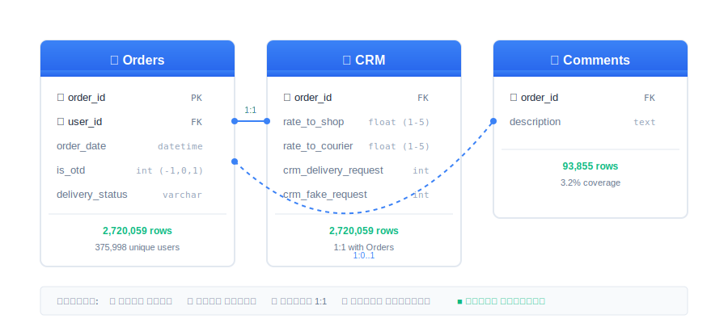
نمودار ER - رابطه بین جداول
جدول Orders
| ستون | توضیحات | نوع |
|---|---|---|
| order_id | شناسه یکتای سفارش | PK |
| user_id | شناسه مشتری | FK |
| order_date | تاریخ سفارش | datetime |
| is_otd | تحویل بهموقع | 1/0/-1 |
| delivery_status | وضعیت تحویل | varchar |
جدول CRM
| ستون | توضیحات |
|---|---|
| rate_to_shop | امتیاز فروشگاه (1-5) |
| rate_to_courier | امتیاز پیک (1-5) |
| crm_delivery_request_count | تعداد شکایات |
نکته: این دیتاست فاقد اطلاعات مالی است، بنابراین از RF به جای RFM استفاده شد.
🔍 تحلیل اکتشافی دادهها (EDA)
توزیع تعداد سفارش کاربران
44.9%
یکبار خریداران
7.23
میانگین سفارش/کاربر
2
میانه سفارش/کاربر
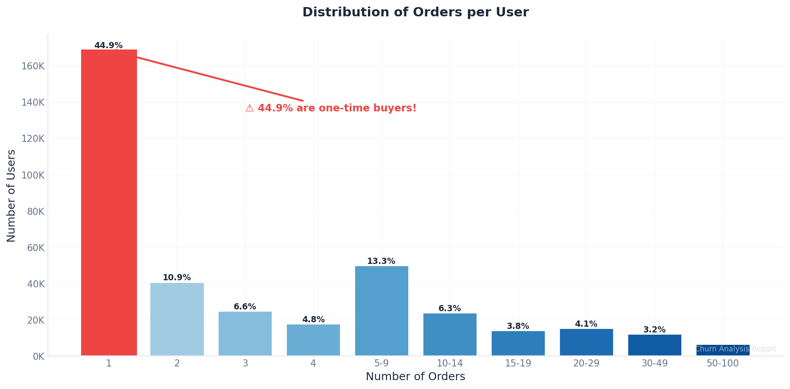
هیستوگرام توزیع تعداد سفارش
یافته کلیدی: تقریباً نیمی از کاربران فقط یک بار خرید کردهاند!
عملکرد تحویل
| وضعیت | درصد |
|---|---|
| ✅ تحویل موفق | 95.5% |
| ⏰ بهموقع | 74.2% |
| ⚠️ با تأخیر | 19.7% |
| ❌ لغو شده | 2.8% |
روند سفارشات در زمان

سری زمانی سفارشات روزانه
نکته: در اواخر خرداد و اوایل تیر یک افت شدید مشاهده میشود.
تحلیل Cohort
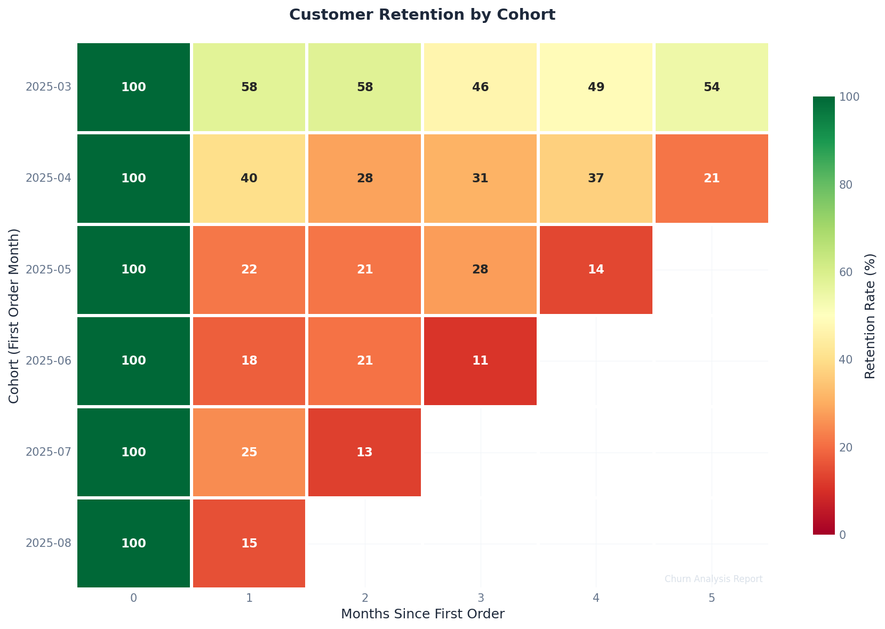
Heatmap تحلیل Cohort
💰 تحلیلهای بیزینسی و مالی
نرخ تبدیل
55.1%
تبدیل خرید اول به دوم
7 روز
میانه زمان تا خرید دوم
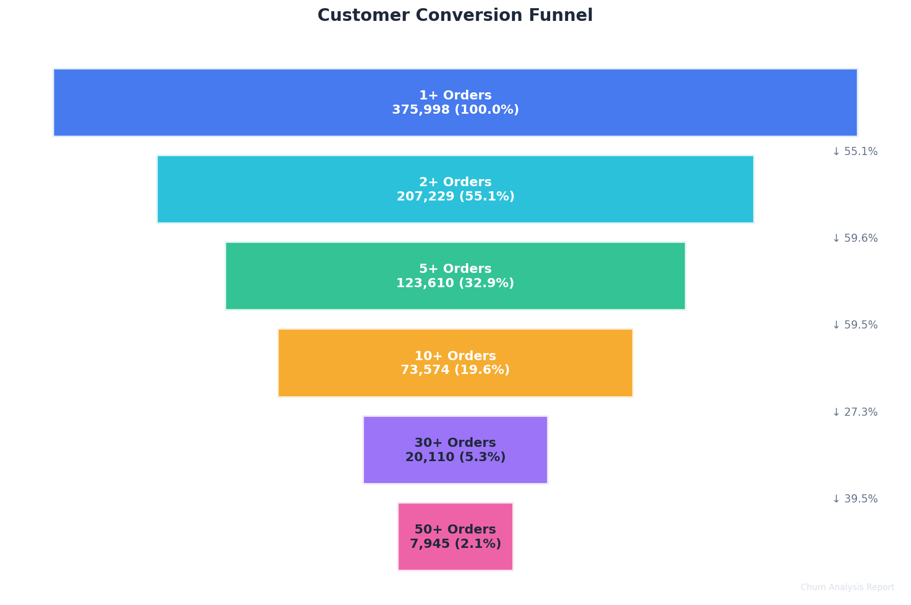
Conversion Funnel
رضایت مشتری
| معیار | مقدار | پوشش |
|---|---|---|
| ⭐ امتیاز فروشگاه | 4.42/5 | 41.4% |
| 🚴 امتیاز پیک | 4.68/5 | 26.3% |
تأثیر تأخیر: نرخ تیکت سفارشات با تأخیر 43% vs 11.5% برای بهموقع
CLV جایگزین
CLV Score = Total Orders × (1 + log(Lifetime Days + 1))

توزیع CLV Score
قانون 80-20: 40% مشتریان VIP مسئول 88.9% سفارشات هستند!
تحلیل Survival

منحنی Kaplan-Meier
👥 سگمنتبندی مشتریان
| سگمنت | تعداد سفارش | کاربران | درصد |
|---|---|---|---|
| 🆕 یکبار | 1 | 168,769 | 44.9% |
| 📦 جدید | 2-4 | 83,619 | 22.2% |
| 🔄 منظم | 5-10 | 55,972 | 14.9% |
| ⭐ وفادار | 11-30 | 48,491 | 12.9% |
| 👑 VIP | 30+ | 19,147 | 5.1% |

توزیع سگمنتها

نمودار Pareto - قانون 80-20
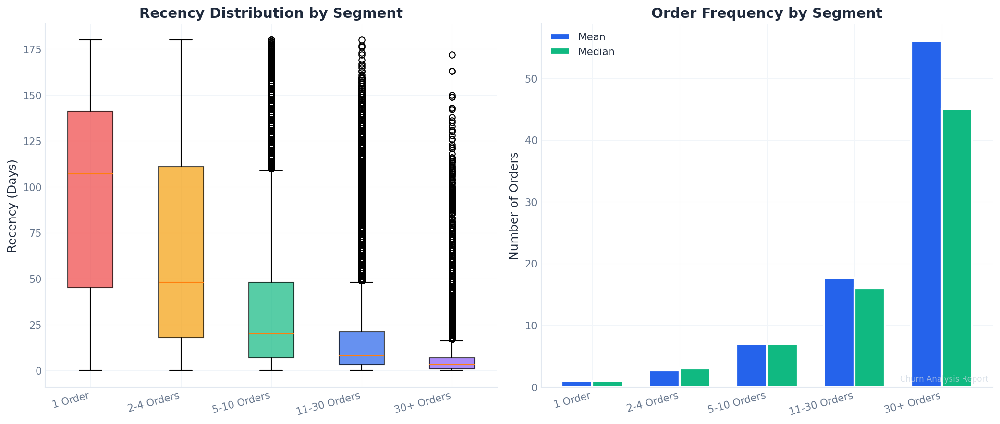
توزیع RF به تفکیک سگمنت
🎯 تعریف Churn
رویکرد: Threshold مختص هر سگمنت
- محاسبه میانگین فاصله خرید برای هر کاربر
- محاسبه میانه در هر سگمنت
- Churn: اگر
Recency > 2 × Median Interval
| سگمنت | آستانه (روز) | نرخ Churn |
|---|---|---|
| 🆕 1 سفارش | 45 | 74.4% |
| 📦 2-4 | 39 | 54.4% |
| 🔄 5-10 | 35 | 31.6% |
| ⭐ 11-30 | 17 | 30.2% |
| 👑 30+ | 14 | 12.5% |
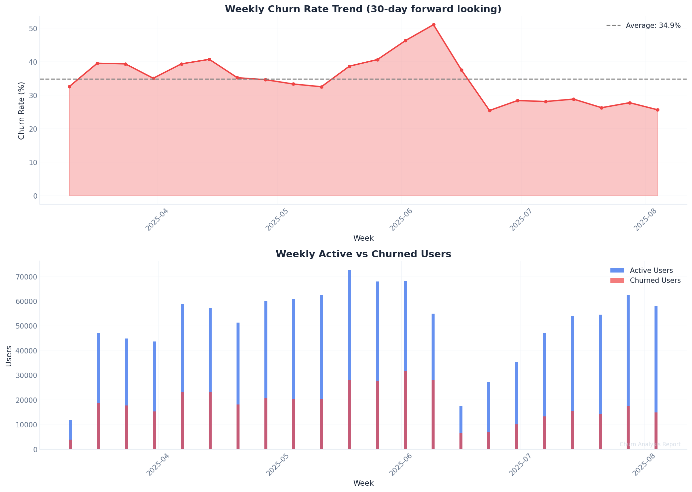
روند Churn Rate در زمان
🔧 پیشپردازش دادهها
مدیریت مقادیر گمشده
| ستون | گمشده | روش |
|---|---|---|
| rate_to_shop | 58.6% | Zero + Indicator |
| rate_to_courier | 73.7% | Zero + Indicator |
| is_otd = -1 | 6.1% | سه flag جداگانه |
Rolling Window Split
جلوگیری از Data Leakage: Features فقط از قبل Cutoff، Label از بعد Cutoff
|═══ Observation Window ═══|═══ Prediction Window ═══|
⚙️ مهندسی ویژگیها
در مجموع 98 ویژگی در 7 دسته ساخته شد:
1️⃣ ویژگیهای RF - Recency-Frequency (9 ویژگی)
الگوی زمانی و تکرار خرید مشتری
total_orders
تعداد کل سفارشات
recency
روز از آخرین سفارش
tenure_days
عمر مشتری (اول تا آخر)
min_order_interval
کمترین فاصله بین سفارشات
max_order_interval
بیشترین فاصله بین سفارشات
median_order_interval
میانه فاصله سفارشات
cv_order_interval
ضریب تغییرات (std/mean)
orders_per_month
میانگین سفارش در ماه
recency_tenure_ratio
نسبت recency به tenure - مهمترین!
2️⃣ ویژگیهای کیفیت تحویل (27 ویژگی)
کیفیت تجربه تحویل و روند آن
otd_orders
تعداد سفارشات بهموقع
late_orders
تعداد سفارشات با تأخیر
unknown_otd_orders
وضعیت نامشخص
delivered_orders
سفارشات تحویلشده
cancelled_orders
سفارشات لغوشده
otd_rate
نرخ تحویل بهموقع کل
late_rate
نرخ تأخیر کل
delivery_success_rate
نرخ موفقیت تحویل
otd_rate_last_3
OTD در ۳ سفارش اخیر
otd_rate_last_5
OTD در ۵ سفارش اخیر
otd_rate_last_10
OTD در ۱۰ سفارش اخیر
consecutive_late_current
تأخیر متوالی فعلی
max_consecutive_late
حداکثر تأخیر متوالی
last_order_was_late
آیا آخرین سفارش تأخیر داشت؟
otd_trend
روند OTD (بهبود/بدتر)
first_order_is_otd_ontime
سفارش اول بهموقع بود؟
first_order_is_otd_late
سفارش اول تأخیر داشت؟
first_order_is_delivered
سفارش اول تحویل شد؟
first_order_is_cancelled
سفارش اول لغو شد؟
last_order_is_otd_*
وضعیت OTD آخرین سفارش
cancellation_rate
نرخ لغو سفارشات
3️⃣ ویژگیهای CRM/پشتیبانی (13 ویژگی)
تعامل کاربر با پشتیبانی
total_crm_requests
مجموع درخواستهای پشتیبانی
total_fake_requests
درخواستهای نامعتبر
max_crm_per_order
حداکثر شکایت در یک سفارش
orders_with_crm
سفارشات با شکایت
crm_request_rate
نرخ شکایت/سفارش
fake_request_rate
نرخ شکایت فیک
orders_with_crm_rate
درصد سفارشات با شکایت
net_crm_requests
شکایات واقعی (کل - فیک)
fake_to_real_ratio
نسبت فیک به واقعی
high_crm_user
کاربر پرشکایت (Flag)
4️⃣ ویژگیهای امتیازدهی (23 ویژگی)
رضایت کاربر از فروشگاه و پیک
avg_rate_shop
میانگین امتیاز فروشگاه
min_rate_shop
کمترین امتیاز فروشگاه
max_rate_shop
بیشترین امتیاز فروشگاه
std_rate_shop
انحراف معیار امتیاز
shop_rating_count
تعداد امتیازدهی فروشگاه
avg_rate_courier
میانگین امتیاز پیک
courier_rating_count
تعداد امتیازدهی پیک
shop_rating_completion
درصد امتیازدهی فروشگاه
courier_rating_completion
درصد امتیازدهی پیک
rating_engagement
میزان مشارکت امتیازدهی
low_shop_rating_count
امتیاز پایین فروشگاه (<3)
low_shop_rating_ratio
نسبت امتیاز پایین
has_low_shop_rating
امتیاز پایین داده؟ (Flag)
has_low_courier_rating
امتیاز پایین پیک؟
has_any_low_rating
هر نوع امتیاز پایین؟
5️⃣ ویژگیهای کامنت - NLP ساده (15 ویژگی)
فقط 3.2% سفارشات کامنت داشتند
total_comments
تعداد کل کامنتها
total_comment_length
مجموع طول کامنتها
has_any_emoji
استفاده از ایموجی؟
mentions_thanks_count
تعداد تشکر
mentions_problem_count
ذکر مشکل
mentions_late_count
ذکر تأخیر
mentions_wrong_item_count
ذکر اشتباه
mentions_quality_issue_count
مشکل کیفیت
mentions_packaging_count
بستهبندی
mentions_last_time_count
"دفعه آخر"
comment_rate
نرخ کامنتگذاری
is_vocal_customer
کاربر پرحرف؟ (>20%)
6️⃣ ویژگیهای سفارش اول/آخر (7 ویژگی)
تجربه اول و آخر بسیار مهم است
first_order_had_issue
سفارش اول مشکل داشت؟
last_order_had_issue
آخرین سفارش مشکل داشت؟
first_order_has_comment
سفارش اول کامنت داشت؟
last_order_has_comment
آخرین سفارش کامنت داشت؟
7️⃣ ویژگیهای ترکیبی (4 ویژگی)
الگوهای پیچیدهتر
high_freq_low_quality
سفارش زیاد + OTD پایین
engaged_but_unhappy
امتیازدهی فعال + امتیاز پایین
many_tickets_low_rating
شکایت زیاد + امتیاز پایین
first_bad_still_active
تجربه بد اول + هنوز فعال
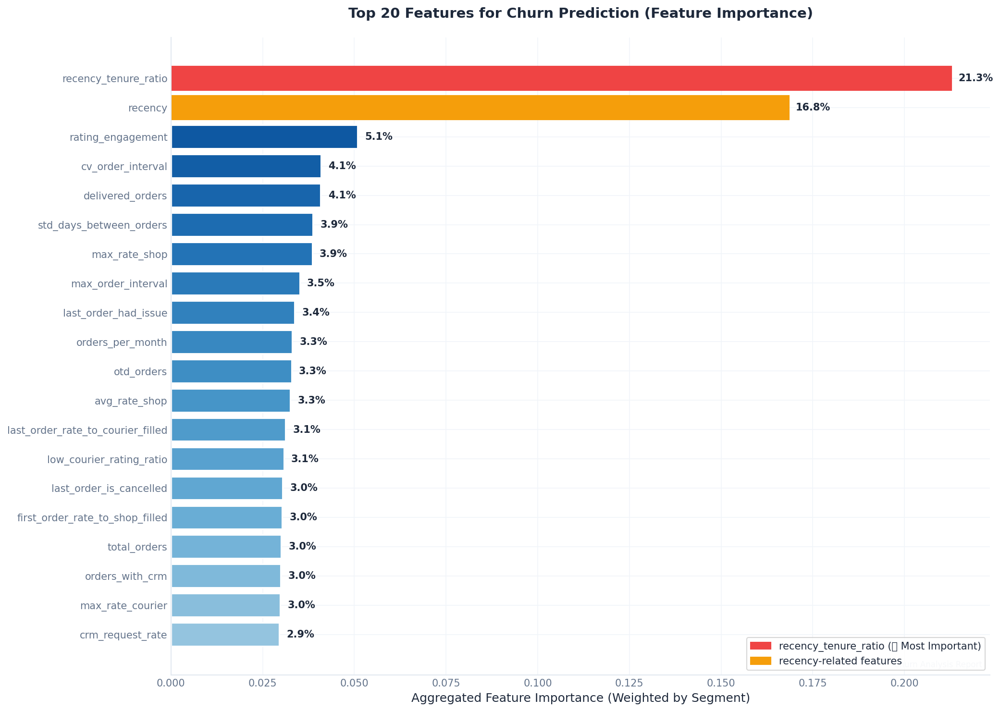
Feature Importance - مهمترین ویژگیها
🤖 مدلسازی
استراتژی دوگانه
👤 1 سفارش: XGBoost (الگوی کافی ندارند)
👥 2+ سفارش: FT-Transformer (الگوهای غنی)
مقایسه رویکردها
| رویکرد | Weighted Recall |
|---|---|
| مدل یکپارچه | 0.29 |
| Per-Segment | 0.48 |
| Clustering | 0.74 |
وزندهی سگمنتها
| سگمنت | وزن |
|---|---|
| 2-4 سفارش | 0.5 |
| 5-10 سفارش | 1.5 |
| 11-30 سفارش | 3.0 |
| 30+ سفارش | 5.0 |
بهبود با Tuning: 0.478 → 0.558 (+8%)
📈 نتایج و ارزیابی
0.82
Overall Recall
0.73
F1 Score
0.65
Weighted Recall
0.63
ROC-AUC
عملکرد به تفکیک سگمنت
| سگمنت | مدل | Recall |
|---|---|---|
| 👤 1 سفارش | XGBoost | 0.75 |
| 📦 2-4 | FT-Transformer | 0.99 |
| 🔄 5-10 | FT-Transformer | 0.89 |
| ⭐ 11-30 | FT-Transformer | 0.69 |
| 👑 30+ | FT-Transformer | 0.52 |
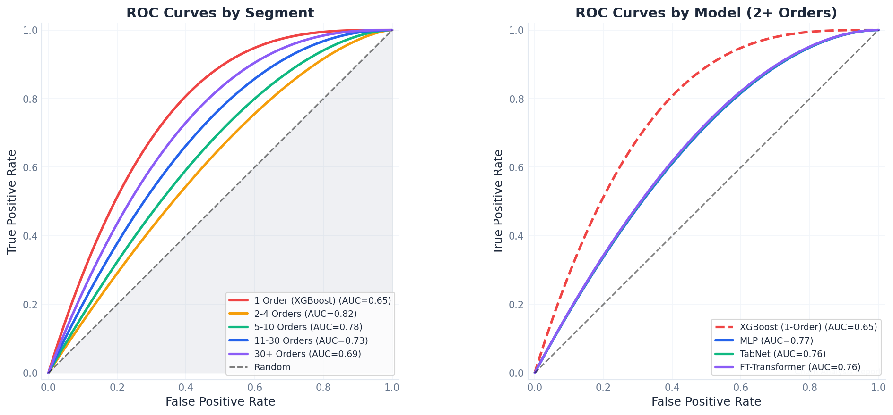
ROC Curves
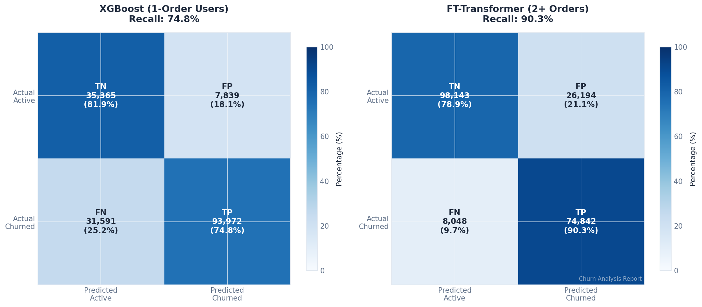
Confusion Matrix
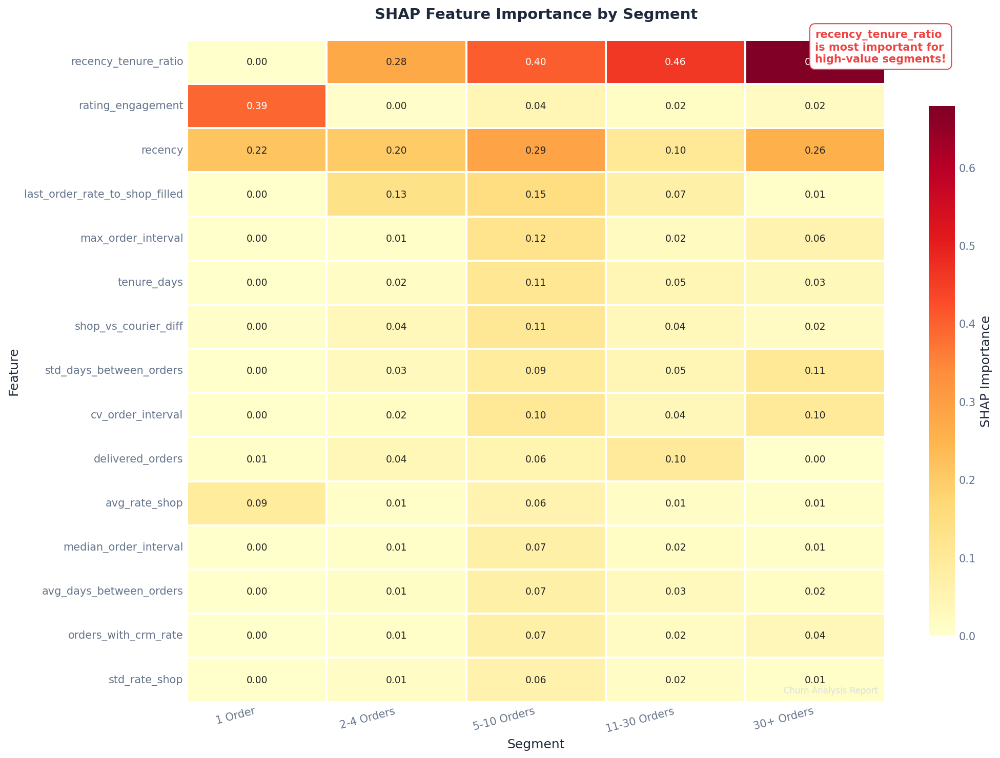
SHAP Summary
مهمترین ویژگی:
recency_tenure_ratio
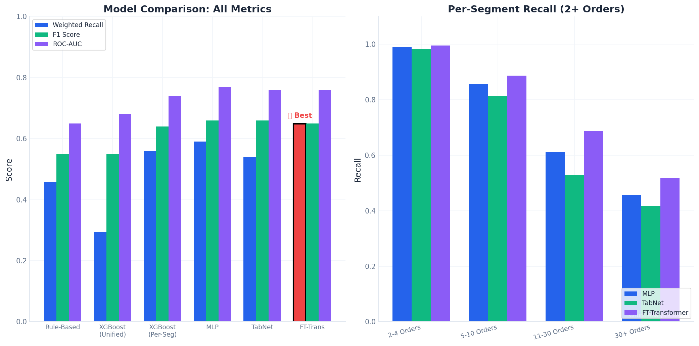
مقایسه مدلها
🔮 پیشنهادات آینده
- Rolling Behavior: الگوی یک ماه اخیر > ۶ ماه گذشته
- Personalized Threshold: برای VIP از میانه خود کاربر
- Time-Aware Features: وزندهی به رفتارهای اخیر
- علت عدم خرید دوم: چرا 45% فقط یکبار؟
- داده مالی: تبدیل RF به RFM
- A/B Testing: ارزیابی intervention
نکات کلیدی
- سگمنتبندی قبل از مدلسازی، دقت را افزایش میدهد
- تعریف Churn باید مختص هر سگمنت باشد
- تجربه اولین سفارش تأثیر زیادی دارد